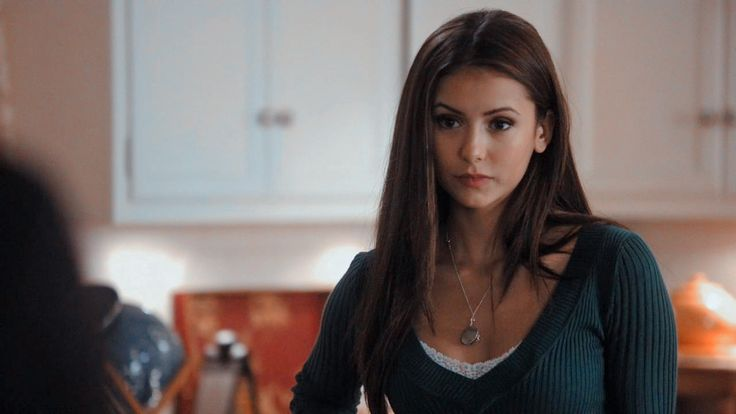
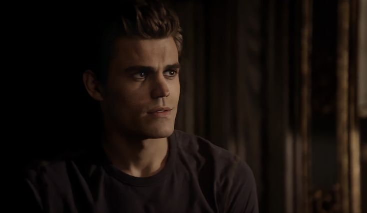
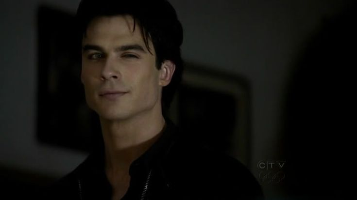
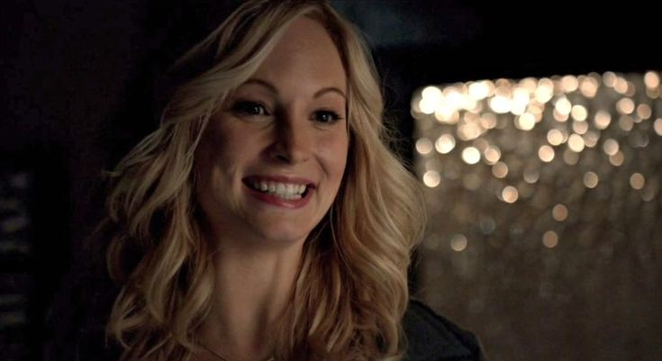
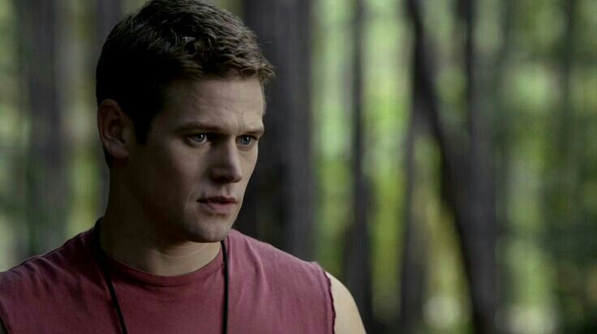
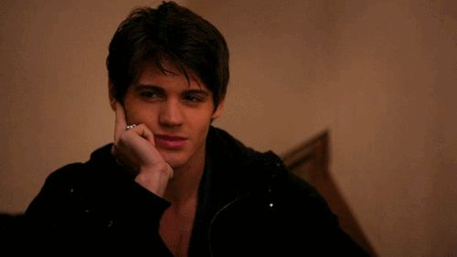
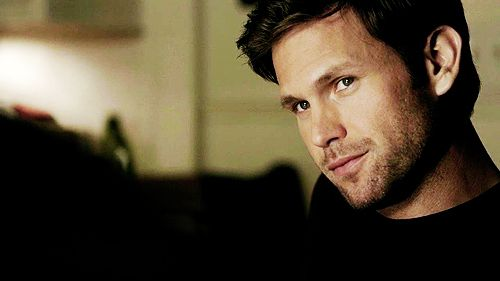
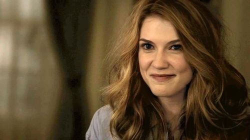
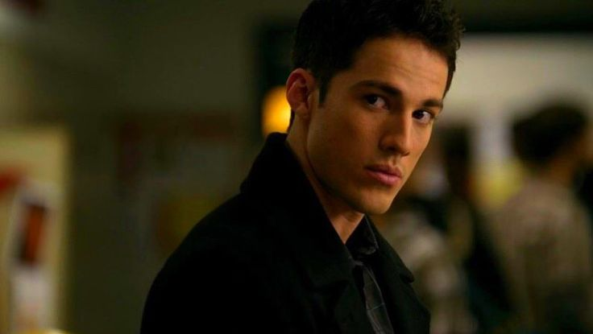

Meet the Cast: The Vampire Diaries
From 2009 to 2017, The CW's "The Vampire Diaries" was a fan-favorite
show. The series led Nina Dobrev, Paul Wesley, and Ian Somerhalder to
become well-known actors during a time when vampire-based shows and
films were at peak popularity.
In the years since the show first premiered, "TVD" cast members
have gone on to star in movies, pursue music, and start their own
families.
Keep reading to find out what the stars of the hit show have been
up to.
1. Nina Dobrev ~ Elena Gilbert

Nina Dobrev, born Nina Kamenova Dobreva on January 9, 1989, is a
Canadian actress. She gained recognition for her roles as Elena
Gilbert and Katherine Pierce on The CW's supernatural drama series The
Vampire Diaries from 2009 to 2015. Born in Sofia, Bulgaria, Dobrev was
raised in Toronto.
She is currently starring in The CW’s drama The Vampire Diaries,
playing the dual role of Elena Gilbert, a human who is caught between
two vampire brothers, and Elena’s doppelgänger Katherine Pierce, a
vampire that the same brothers each loved while they were still human
during the American Civil War.
2. Paul Wesley ~ Stefan Salvatore

Paul Wesley, born Paweł Tomasz Wasilewski on July 23, 1982, is an
American actor, director, and producer. He gained fame for his role as
Stefan Salvatore in the television series The Vampire Diaries, which
aired from 2009 to 2017. Born to Polish parents in New Brunswick, New
Jersey, Wesley grew up in Marlboro Township.
In 2005, he began to credit himself as Paul Wesley. When asked why he
changed his professional name to Paul Wesley, he replied: “my
birthname is too hard to pronounce! I asked my family’s permission to
change it, and it’s really helped my career.”
3. Ian Somerhalder ~ Damon Salvatore

Ian Joseph Somerhalder is an American actor known for his roles in
various TV shows. Born on December 8, 1978, in Covington, Louisiana,
Somerhalder started his career as a model before transitioning into
acting.
In September 2009, Somerhalder appeared in the movie The Tournament
where he played the role of an assassin participating in a lethal
competition with other assassins. On 10 October 2009, it was announced
that he will star in the Gothic movie Cradlewood, which is to be
directed by Harry Weinmann. The movie is set to be released in 2011.
Somerhalder currently stars as Damon Salvatore in the CW TV teen drama
series The Vampire Diaries.
4. Kat Graham ~ Bonnie Bennett
Kat Graham, born Katerina Alexandre Hartford Graham on September 5,
1989, is an American actress, singer, and activist. She is best known
for her role as Bonnie Bennett on The CW's supernatural drama series,
The Vampire Diaries, which aired from 2009 to 2017.
In addition to her acting career, Graham has released two extended
plays and four studio albums. Born in Geneva, Switzerland, she was
raised in Los Angeles, California. Graham's diverse background
includes Americo-Liberian and Jewish ancestry, with her father being a
former music executive and her mother coming from a family with Polish
and Russian roots.
5. Candice King ~ Caroline Forbes

Candice Accola (formerly King) is an American actress and singer. Born
in Houston, Texas, Candice grew up in Edgewood, Florida, and attended
Lake Highland Preparatory School in Orlando.
She is best known for her role as Caroline Forbes in The CW
supernatural drama series The Vampire Diaries and her recurring role
as the same character on the spin-off series The Originals and
Legacies. In addition to her acting career, she released her debut
album, It's Always the Innocent Ones, independently in the United
States. She co-wrote most of the songs on the album, which achieved
greater success after its re-release in Japan. Candice also toured as
a backing singer for Miley Cyrus's Best of Both Worlds Tour.
6. Zach Roerig ~ Matt Donovan

Zach Roerig (born February 22, 1985) is an American actor known for
his roles in various TV shows. Born in Montpelier, Ohio, he attended
the Barbizon Modeling and Acting School in Cleveland before signing
with his talent manager through the International Modeling and Talent
Association.
He gained recognition for his portrayal of Casey Hughes on the soap
opera As the World Turns from 2005 to 2007. Roerig also appeared as
Hunter Atwood in One Life to Live and as Matt Donovan in The Vampire
Diaries.
7. Steven R. McQueen ~ Jeremy Gilbert

Steven Chadwick McQueen, born on July 13, 1988, is an American actor
best known for his role as Jeremy Gilbert in The CW's supernatural
drama series, The Vampire Diaries, from 2009 to 2015. He also appeared
in the show's spin-off, Legacies, in 2018. McQueen showcased his
acting skills in the NBC dramas Chicago Fire (2015-2016) and Chicago
P.D. (2016), both part of the One Chicago franchise.
Born in Los Angeles, McQueen comes from a family with a strong
entertainment background. His father is race car driver and former
actor Chad McQueen, and his paternal grandparents are the legendary
actor Steve McQueen and Filipino actress Neile Adams. His stepfather
is former ice hockey player Luc Robitaille. McQueen has three siblings
and is of Filipino and Spanish heritage.
8. Matthew Davis ~ Alaric Saltzman

Matthew Wadsworth Davis (born May 8, 1978) is an American actor. Davis
was born in Salt Lake City, Utah. After graduating from Woods Cross
High School, Davis attended the University of Utah.
On television, he has starred in the hit ABC drama What About Brian
(2006-2007) as lawyer Adam Hillman. He is currently appearing in The
CW drama The Vampire Diaries as high school history teacher and
vampire hunter Alaric Saltzman.
9. Sara Canning ~ Jenna Sommers

Sara Canning is a Canadian actress born on July 14, 1987 in Gander,
Newfoundland, Canada, the daughter of Wayne and Daphne Canning, and
was raised in Sherwood Park, near Edmonton, Alberta.
he gained recognition for her role as Jenna Sommers on The CW
television series The Vampire Diaries. Canning also appeared in the
2009 film Black Field and the 2017 theatrical film War for the Planet
of the Apes. She starred as Dylan Weir in the Canadian TV series
Primeval: New World, and portrayed Dr. Melissa Conner on the Global
medical drama Remedy.
10. Michael Trevino ~ Tyler Lockwood

Michael Trevino (born January 25, 1985) is an American actor known for
his roles in The CW's The Vampire Diaries as Tyler Lockwood, and in
Roswell, New Mexico as Kyle Valenti.
Born in Los Angeles and raised in Montebello, California, Trevino
later moved to Valencia. His mother is from Zacatecas, Mexico, and his
father was born in Fresno, California, to Mexican immigrants. Trevino
has also appeared in various TV shows including Cold Case, Without a
Trace, Bones, The Mentalist, and Charmed. Additionally, he had a
recurring role in The Riches and played a small role in the Disney
Channel Original Movie Cow Belles.
In the world of Mystic Falls, where vampires, witches, and supernatural secrets intertwine, 'The Vampire Diaries' has left an indelible mark on our hearts. As we conclude our journey through this captivating series, we hope you've enjoyed exploring the intricate web of love, friendship, and the eternal struggle between darkness and light. Thank you for joining us on this supernatural adventure. Remember, even when the series ends, the magic lives on in our hearts. Stay tuned for more updates, news, and discussions about 'The Vampire Diaries' and its enchanting universe. Until next time, may your life be filled with as much drama, romance, and mystique as Mystic Falls itself. Farewell, fellow Vampire Diaries enthusiasts!